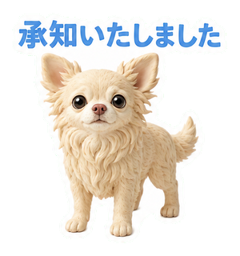
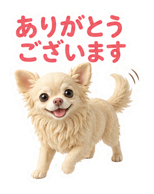
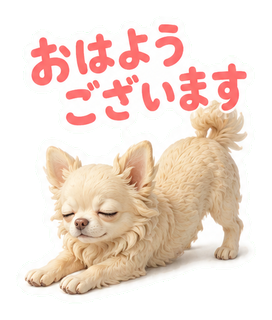
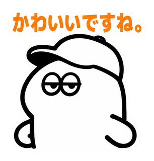
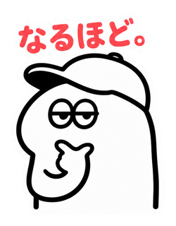
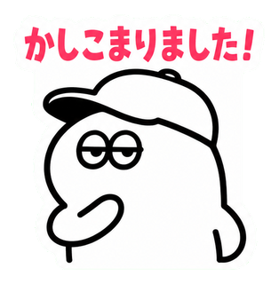
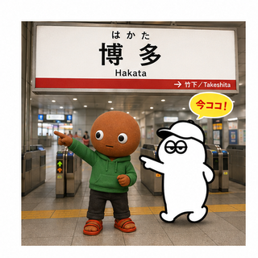
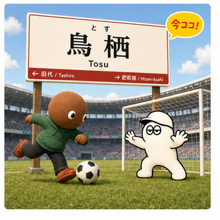
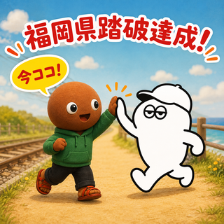

日常のやりとりでそのまま使える、あいさつ・リアクション・お祝いまで40種類。


実在するチワワ「ビビちゃん」をクレイアート風キャラクター化した40種類。


個人開発・エンジニアの「あるある」をミートボーが代弁する40種類。


半袖の柄シャツを着た夏バージョンのミートボーが、夏の食べ物・海やプール・夏の行事・暑さへの反応まで代弁する40種類。


「それな」「うける」「りょ」など、実際のLINEの返信でそのまま使える相槌・リアクション集40種類。


実在するチワワ「ビビちゃん」の秋バージョン。紅葉狩り・落ち葉・金木犀など、秋を満喫する犬らしい自然な仕草を代弁する40種類。


miitobow.comに隠れている「あいつ」の秋バージョン。紅葉狩り・読書の秋・ハロウィンなど、あいつらしいミステリアスな仕草も交えた40種類。


ミートボーとあいつが初共演。移動手段・時間の目安・あるあるネタなど、様々な「向かってます」パターンをそろえた40種類。



チワワのビビちゃんが敬語で返信してくれる40種類。「承知いたしました」「少々お待ちください」等、職場やチャットで使える丁寧な言い回しを犬らしい仕草で表現。



あいつがシュールな表情で返信するスタンプを作成しました。表情のギャップがたまらないスタンプです。


ミートボー×あいつが博多から門司港まで、鹿児島本線32駅を巡る返信スタンプ。駅名標と「今ココ!」で今どこにいるか一目で伝わります。


無表情のミートボーが、どんな会話にも投げ返せる万能の相槌・つなぎ言葉を代弁する40種類。
審査中


布団から出たくない、やる気ゼロな日にぴったりの40種。悲しいだるさではなく、堂々と誇らしげにだらける表情がクセになります。
審査申請準備中


ミートボー×あいつが博多から大牟田まで鹿児島本線を巡る返信スタンプ。道中一瞬だけ佐賀県も通過。駅名標と「今ココ!」で今どこにいるか一目で伝わります。